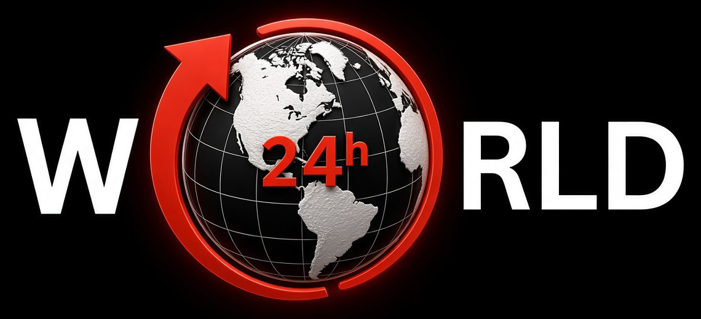

Privacy policy
Last updated: 10 November 2026
What this covers
This policy covers the "World Last 24hr" uploader app and this website. The app is a private tool operated by the owner of the World in Last 24hr YouTube channel. Only the channel owner signs in to it.
Google and YouTube data the app accesses
- Upload videos: to publish the channel's own videos to the channel's own YouTube account.
- View the channel: to confirm which channel is connected and read basic video statistics.
- View YouTube Analytics: to read the performance of the channel's own videos, such as views and watch time.
How that data is used
The data is used only to publish the channel's videos and to decide what kind of videos to make next. It is not sold, not shared with third parties, and not used for advertising. The app does not access any other Google user's data.
Storage
Sign-in credentials are kept as encrypted secrets in the channel owner's private code repository. Video statistics are kept in that same private repository. No data about viewers or visitors is collected or stored by the app.
This website
This website does not use cookies, analytics or sign-in, and collects no personal information. It is hosted on GitHub Pages, which may log technical details such as IP addresses under GitHub's privacy statement.
Removing access
The channel owner can revoke the app's access at any time from Google Account permissions.
Contact
Questions can be sent through the channel's About page on YouTube.